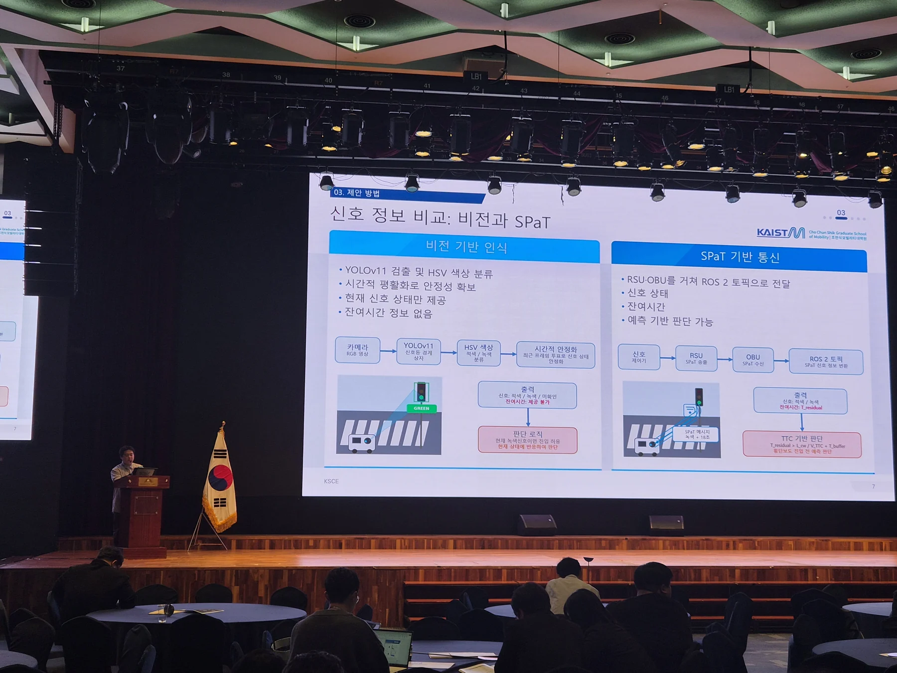
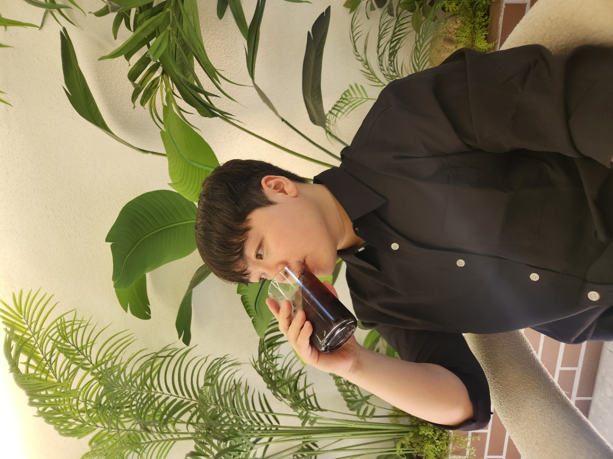
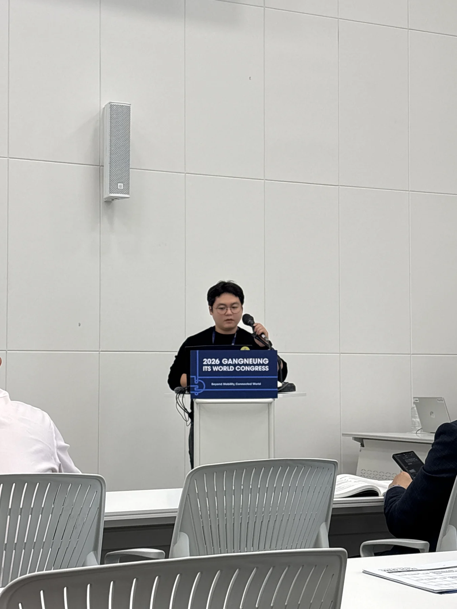
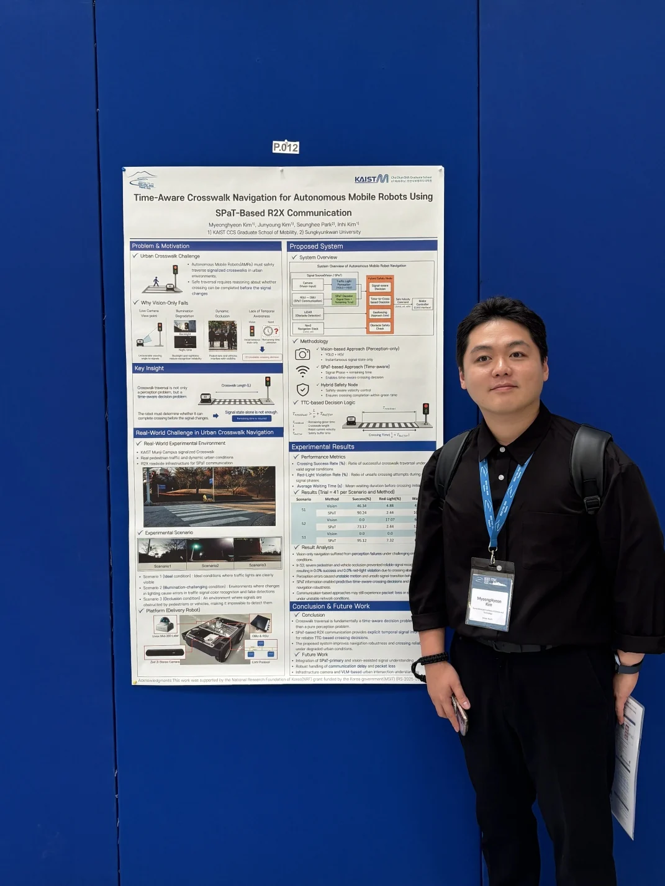

Research presentation at KSCE 2026
Presented an R2X-based navigation system for AMR crossing at urban intersections in the AI Construction Infrastructure Resilience session.
Curriculum vitae / M.S. Student · KAIST
Cho Chun Shik Graduate School of Mobility
Korea Advanced Institute of Science and Technology
I study how autonomous mobile robots can safely navigate urban intersections. My work connects SPaT/R2X communication, robotic navigation and infrastructure-based perception, from real-world crossing experiments to simulation.


Presented an R2X-based navigation system for AMR crossing at urban intersections in the AI Construction Infrastructure Resilience session.

Presented research on R2X-assisted autonomous mobile robot navigation at urban intersections.

Presented Time-Aware Crosswalk Navigation for Autonomous Mobile Robots Using SPaT-Based R2X Communication as an LBR poster in Naples, Italy.
2025–present
M.S. student · Cho Chun Shik Graduate School of Mobility
Advisor: Prof. Inhi Kim. Thesis research: VLM-based intersection context understanding for autonomous mobile robot crossing.
Undergraduate
Automotive IT Convergence · Graduated
Advanced microdegrees in Future Automotive and Future Automotive Mobility Convergence.
2024
Researcher · Cho Chun Shik Graduate School of Mobility
V2X field experiment analysis and infrastructure-based pedestrian perception.
Sep–Dec 2023
Credit-linked internship
Motion detection and face recognition for automatic door control.
Autonomous mobile robot navigation · SPaT/R2X communication · Infrastructure-based perception · Vision-language models · Intelligent transportation systems
Thesis research VLM-based intersection context understanding for AMR crossing decisions.
Research direction ↗The Journal of The Korea Institute of Intelligent Transport Systems, 23(6), 174–189 (2024).
DOI ↗IEEE ITSC 2026 · Late-Breaking Results poster · Naples, Italy.
Korean ITS Spring Conference, 2026 · Poster.
APTE 2026 · Conference presentation.
ITS World Congress 2026 · Conference presentation.
KSCE 2026 CONVENTION · Conference presentation.
Korean ITS Spring Conference, 2025.
Korea Institute for Structural Maintenance and Inspection, 2025 Fall Conference and Special Lecture.
2025 Suwon ITS Asia-Pacific Forum · Poster PS06-133.
Korean ITS Spring Conference, 2025 · Poster.
Korean ITS Spring Conference, 2024.
Korean Society of Mechanical Engineers Spring Conference, 2023.
Korean Institute of Information Scientists and Engineers Conference Proceedings, 2022.
Korean Institute of Information Scientists and Engineers Conference Proceedings, 2022.
2024
Kookmin University
Recognized for exemplary university life and contributions through external activities.
2023
Korean Society of Mechanical Engineers (KSME)
Team project: deep learning-based abnormal vehicle detection and warning system.
2022
Cloud Programming World Cup
Team project combining a virtual driving environment, abnormal-object detection and driver gaze recognition.
2022
Korea Software Congress (KIISE)
Vision-system and deep-neural-network research on abnormal vehicle and driver behaviors.
2018 · 2022
Kookmin University
Academic merit scholarship, Fall 2018 (성적3종) and Fall 2022 (성적2종).
Jun 2024
KAIST & Ajou University
Road transportation convergence program, June 17–28, 2024.
Feb 2024
Future Automotive · Future Automotive Mobility Convergence
Completed both advanced curricula, 9 credits each.
Mar 2022
MODULABS · Justin’s course based on Michigan EECS 498
Certificate of completion, March 24, 2022.
For research collaborations and inquiries: